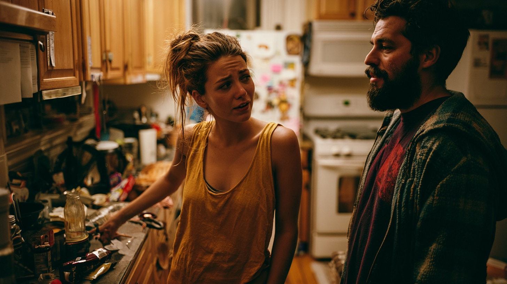

The perception gap quiz
Do you two see the same house?
Six quick questions. Answer honestly, then send the link to whoever you live with. We'll show you both your household's Perception Gap — benchmarked against real research.1
The perception gap quiz
Someone in your house already answered.
Now it's your turn. Same six questions, same honesty. Once you're done, we'll show you both where you agree — and where you don't.
Question 1 of 6
Step 1 of 2, done
Your answers are locked in.
You won't see the result until your partner answers too — that's the whole point. Send them this link now, while it's fresh.
Your household’s perception gap
You two disagree on
of who-does-what — the average household: 36%1
A new couple? Take a fresh quiz — this link is tied to your household's answers. Curious about the actual hours behind that gap? Try the Argument Hours Calculator.
1 Beyond Time — arXiv, 2025: 36% of couples disagree on who organizes the household; 63% of women vs. 52% of men agree on who is the primary organizer. Full sources in the Mental Load Library.